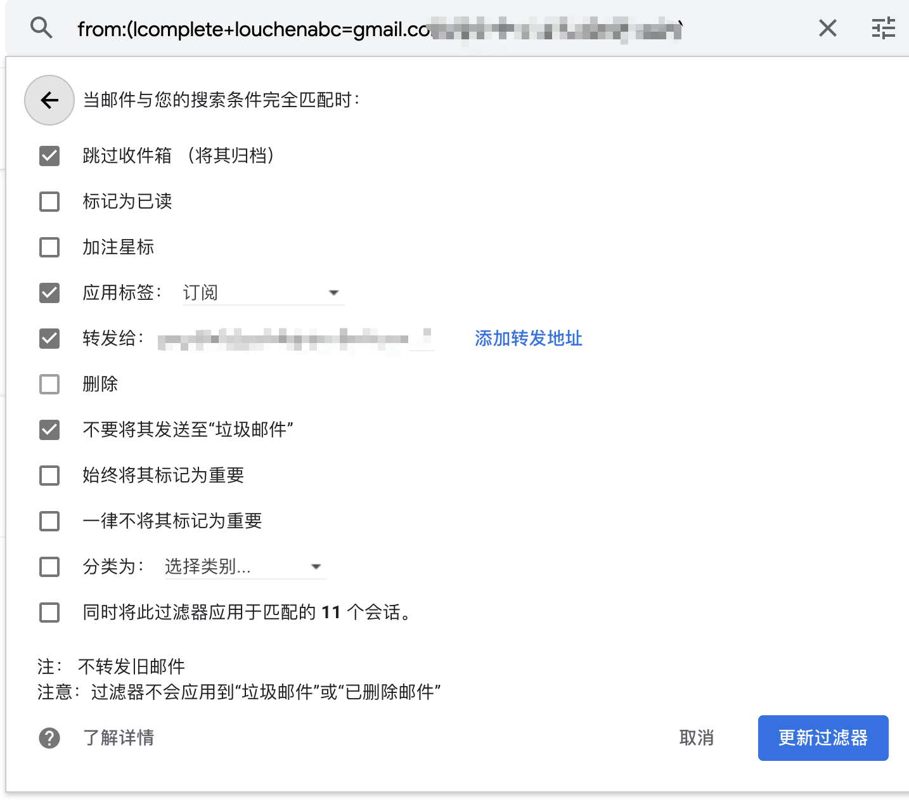
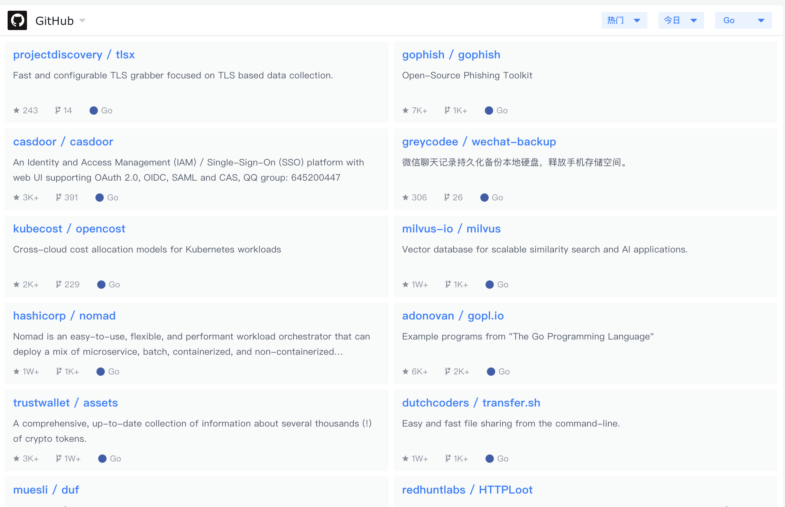
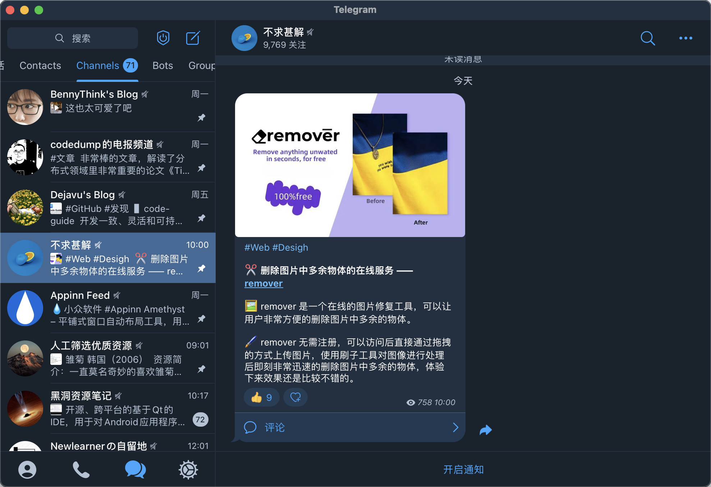

我日常获取信息主要有如下 6 个渠道：
- NewsLetter
- 掘金的 GitHub 热门榜
- GitHub Following && For you
- Telegram Channel
- 书籍
我在上大学期间做过的最有价值、对我人生影响最大的一件事，可能就是掌握了科学上网的手段，并且从大二开始没有再用过百度搜索，把搜索这个任务全部交给了Google ，毕业工作后在 Google 的加持下，我的工作产出和效率应该能比初入职场使用百度的同辈高出 30%，我认为做技术人员的第一步就是弃用百度、使用 Google。至今我仍然会为了提升自己的访问外网的体验，每年投入上千元在购买线路、软件这件事上。
但 Google 终究是个搜索引擎，是我们在遇到问题时使用的工具，接下来我要说的是另一个可以让我们被动获取信息的，等同于国内微博的 Twitter。在 Twitter 上言论相对自由，因为 Twitter 是个面向全世界的产品，所以在这里可以关注很多国内外的技术牛人（没错，也包括国内，由于国内的言论控制很多国内牛人也不在国内平台发言了），看他们的分享，而且信息的时效性很高。同时在上边活跃的国内圈子里的人，大部分都很 geek，愿意分享自己的发现的新玩意或者自己造的新轮子，我通过他们可以获取一手信息，玩到最新的玩具。
有人会说在 Twitter 上看不到自己需要的内容，那是因为你关注的人还不够多，或者还没关注到你想关注那个圈子里的 KOL，稍微耐心一些，再投喂给 Twitter 算法一些你的偏好，早晚能进入你的圈子，看到一个新世界。
今年是我使用 Twitter 的第十个年头，我经常在推上看到让我眼前一亮的内容，给我提供新点子、新工具、新观念。之前会偶尔随手点个 like，但这样在回顾时不便于索引和分享，最近尝试将内容收集到 Notion，方便自己也方便分享给更多的人看∶ https://panmax.notion.site/286a2dbe19ca4a8badcf2e06470964a6 ，这个列表我会随时、持续更新。
NewsLetter
今年 NewsLetter 在国内有流行起来的趋势，国内也出现了做 NewsLetter 业务的平台，如竹白，我也订阅了一些 Letters，有免费的也有付费的，下边分享几个我觉得质量不错的 Letter（排名不分先后），这些 Letter 我基本都是通过 Twitter 发现的：
我会在上班想摸🐟时翻看一下近期的 NewsLetter，我统一用 Google 邮箱接收这些信件，同时设置好了规则，让这些信件汇总在一个目录下，并且不会实时给我发推送（因为我并不需要立即阅读它们）。

掘金的 GitHub 热门榜
我用掘金提供的插件作为浏览器新标签页的默认首页，这个页面中间一栏有 GitHub 上的项目列表，我会不定期看一些我关注语言（如 Go、Rust、Python）又出了哪些新玩具，按热门排序，如果想看新鲜有趣的就看今日，如果想看长盛不衰的就看本周或者本月。

GitHub Following && For you
上边提到的掘金的 GitHub 项目列表，是按照 Star 增量和项目创建时间计算得出的，所有人看到的都是相同的静态数据，GitHub 官方也有自己的两个 Feed 流，分别叫 Following 和 For you。
Following 是看你关注的人的动态（如他关注了什么项目、他贡献了什么项目）

For you 是 GitHub 今年新推出的根据我们的喜好，使用算法推荐给我们的与我们相关、我们可能感兴趣的项目。

Telegram Channel
Telegram channel 是个小宝藏，类似于一个除了群主其他人禁止发言的群，群主产生优质内容后随时发到群里，列几个我自己常看的 channel：

书籍
上边介绍的那些方式获取的信息大多具有时效性，我们不仅要掌握时效信息，还要掌握能经历岁月洗礼的信息，这就要靠读书了，我读书不挑种类，只有一个前提，这本书在豆瓣上的评分要在 9 分以上，我不想把时间浪费在低质量的书上。额外情况是，如果我关注或者敬佩的人推荐了一本书，并且他对书的介绍吸引了我，我也会去读一下。
我还会去挑一些经典书目来读，因为这些书经过时间的淘洗，回应了人类社会最根本的问题，具有跨时代的意义。
我认为读书这件事没有太多捷径和技巧，拿到一本书后按部就班一页一页读就好，我从来没用过网上介绍的那些快速阅读方法，当然在读的过程中手里拿支笔写写画画是有必要的。对了，一定要读纸质书，原因见：纸质书赢了
我的书单：https://jiapan.me/book-list/
尾
互联网时代从来不缺乏免费的内容，最珍贵的资源是我们的时间。不要花太多工夫读那些免费、廉价，但是质量低的内容，读它们不仅浪费时间，甚至会误导我们。